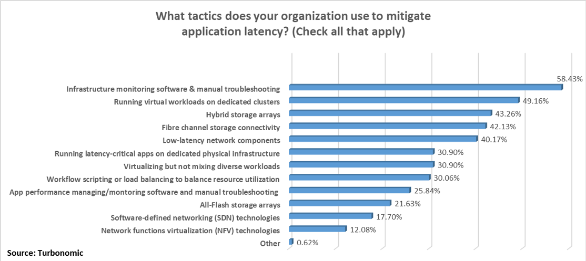

back to top ∧
Innovation Project
Quantum Security assisted by AI, Cloud Computing and Starlink
Intro
Why
Demo
Quantum Computing
AI
Pros & Cons
Conclusion
Questions
Aritifial Intelligence
Machine Learning
v
Types of Machine Learning
v
Machine Learning for Cybersecurity
v
Latency - The biggest issue
